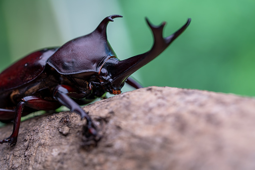

Kumbang Badak (Oryctes rhinoceros)
Kumbang badak atau dalam bahasa Inggris dikenal sebagai Rhinoceros Beetle merupakan salah satu serangga yang paling menarik untuk dipelajari. Serangga ini mendapat nama "badak" karena memiliki tanduk yang menyerupai tanduk badak pada bagian kepalanya, khususnya pada kumbang jantan.
Kumbang badak adalah hama penting pada tanaman kelapa sawit dan kelapa. Larva kumbang ini hidup di dalam tumpukan bahan organik yang membusuk, sementara kumbang dewasa menyerang pucuk pohon kelapa muda, yang dapat menyebabkan kerusakan serius pada tanaman.
Karakteristik Kumbang Badak
| Karakteristik | Deskripsi |
|---|---|
| Nama Ilmiah | Oryctes rhinoceros |
| Famili | Scarabaeidae |
| Ukuran | 30-50 mm (dewasa) |
| Warna | Hitam mengkilap atau cokelat gelap |
| Habitat | Daerah tropis, terutama perkebunan kelapa |
| Makanan | Pucuk kelapa, bahan organik membusuk |
| Masa Hidup | 4-9 bulan (dewasa) |
Siklus Hidup
Siklus hidup kumbang badak dimulai dari telur yang diletakkan betina di dalam tumpukan bahan organik. Telur menetas menjadi larva dalam waktu 12-14 hari. Larva kemudian mengalami tiga instar dan memakan bahan organik yang membusuk selama 3-7 bulan sebelum menjadi pupa. Setelah 2-3 minggu, kumbang dewasa keluar dan siap untuk berkembang biak.
Pengendalian kumbang badak sangat penting dalam industri perkebunan. Metode pengendalian meliputi sanitasi lingkungan, perangkap feromon, dan penggunaan jamur Metarhizium anisopliae sebagai agen pengendali biologi.
Tantangan yang Dihadapi Kumbang Badak
Meskipun kumbang badak dikenal sebagai salah satu hewan terkuat di dunia, mereka menghadapi berbagai ancaman serius dalam kehidupan mereka:
- Kehilangan Habitat: Deforestasi dan perluasan lahan pertanian mengurangi tempat hidup dan sumber makanan mereka.
- Pengendalian Hama: Sebagai hama perkebunan, kumbang badak sering dibasmi dengan pestisida kimia yang keras.
- Penyakit: Jamur Metarhizium dan virus Oryctes menginfeksi populasi kumbang badak secara massal.
- Perubahan Iklim: Perubahan suhu dan kelembaban mempengaruhi siklus hidup dan reproduksi mereka.
- Eksploitasi Manusia: Beberapa spesies kumbang tanduk diburu untuk dijadikan hewan peliharaan eksotis.
Ironisnya, meskipun memiliki kekuatan fisik yang luar biasa, kumbang badak tetap rentan terhadap tekanan lingkungan dan aktivitas manusia. Kekuatan mereka tidak dapat melindungi mereka dari kehilangan habitat atau paparan pestisida.
Penutup:
Demikian informasi mengenai kumbang badak yang telah saya sampaikan. Semoga artikel ini dapat menambah wawasan kita tentang makhluk kecil namun luar biasa ini. Mari kita lebih menghargai keanekaragaman
hayati di sekitar kita dan menjaga keseimbangan ekosistem.
Terima kasih atas perhatiannya. Salam lestari! üåø